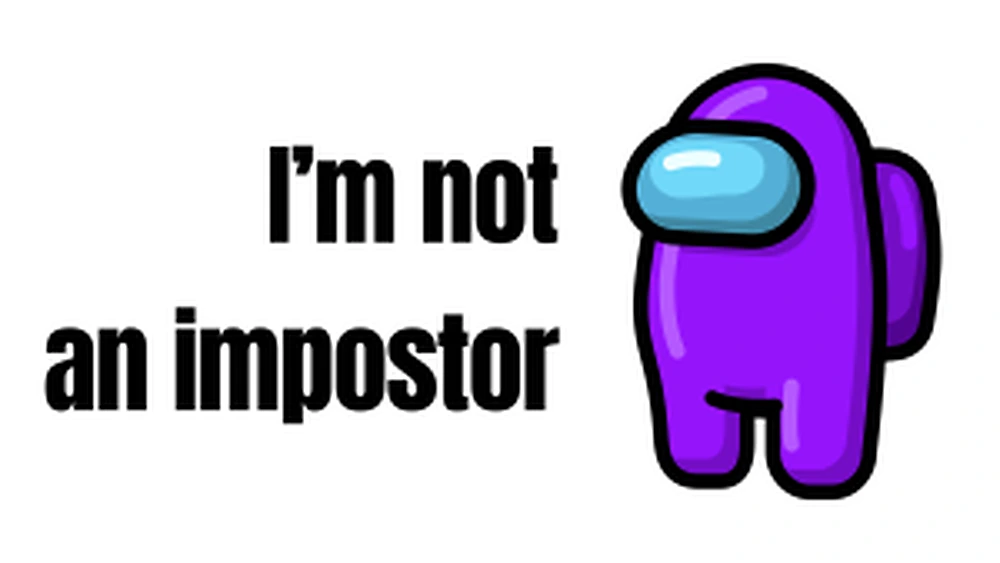

A personal reflection on self-doubt, validation and growth in a design career.

View full imageThe feeling
Impostor syndrome can make designers feel like they are not good enough, even when they are learning, improving and producing real work.
It often appears when we compare ourselves to others or move into more complex responsibilities.
Why it happens
Design is subjective, collaborative and constantly evolving. There is always more to learn, which can make progress feel invisible.
When feedback is unclear or when outcomes take time, self-doubt can grow.
Making progress visible
One way to fight impostor syndrome is to collect evidence: shipped work, case studies, feedback, metrics, lessons learned and moments where a decision created value.
Seeing progress documented makes growth harder to ignore.
The role of community
Talking to other designers helps normalize uncertainty. Many people who look confident are dealing with similar doubts behind the scenes.
Mentorship and peer conversations can provide perspective and support.
Reframing self-doubt
Self-doubt does not always mean you are failing. Sometimes it means you are growing into problems that require a new level of skill.
The goal is not to eliminate doubt completely, but to keep moving with evidence, curiosity and practice.
takeaway